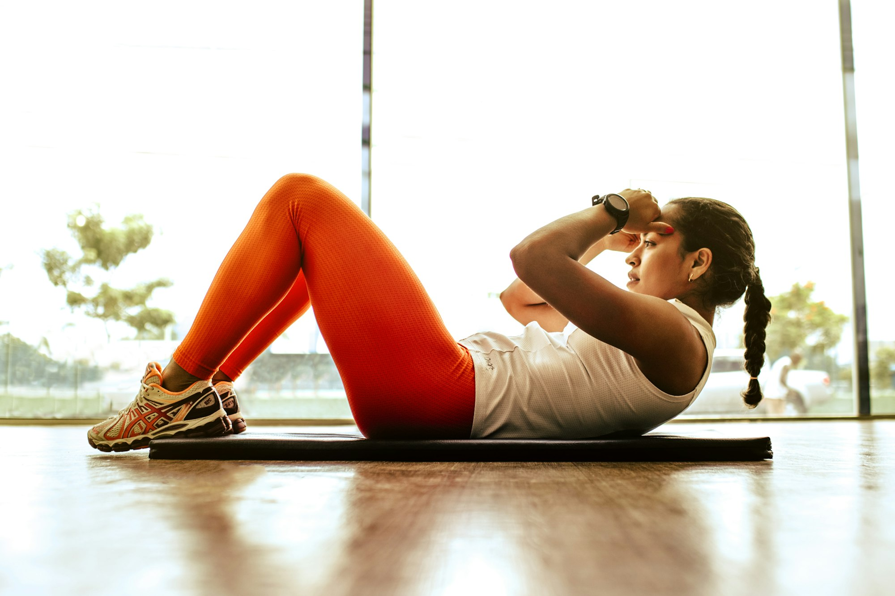
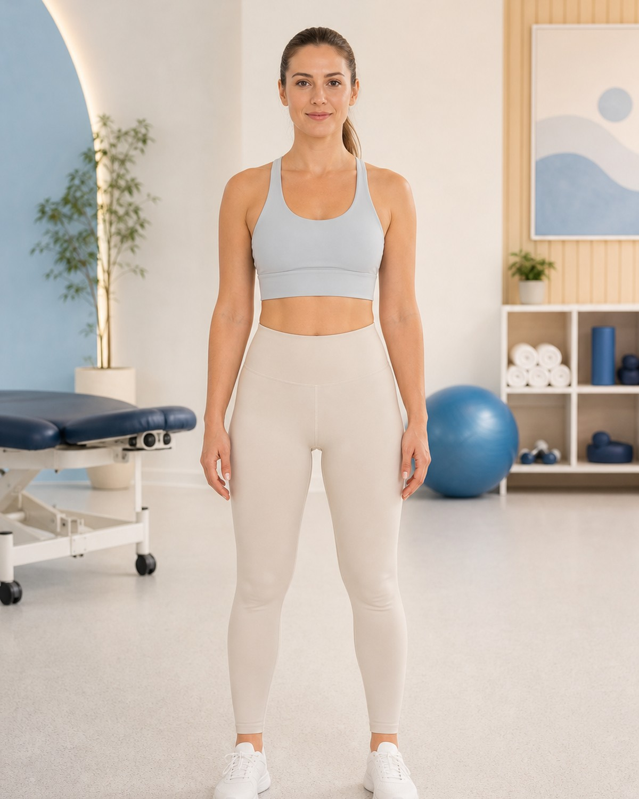

AndreiPopescu
Kinetoterapeut Principal
„Recuperarea pornește de la încrederea că poți să te miști din nou.”
320+ cazuriProgramează →

Planuri personalizate, sesiuni 1-on-1 și o echipă care te ascultă. Te ajutăm să te miști mai bine, fără durere și fără compromisuri.
Lucrăm transparent — știi de la început ce urmează la fiecare etapă.
Alegi serviciul, ziua și ora prin sistem online. Vezi instant detaliile programării.
Anamneză completă, evaluare biomecanică și discuție despre obiectivele tale.
Primești un plan personalizat, cu exerciții și obiective adaptate evaluării tale.
Sesiuni 1-on-1 cu măsurători de progres. Ne ajustăm după evoluție.

Recuperare post-operator, fracturi, entorse, luxații. Evaluare biomecanică completă, plan construit pe obiective măsurabile, ședințe 1-on-1 și ajustări săptămânale.
Vezi disponibilitatea reală a echipei. Fără apeluri, fără timpi de așteptare.
"După o operație la genunchi, echipa m-a ajutat să revin la sport în 3 luni. Sesiuni 1-on-1, foarte profesioniste."
"Hernie de disc de 2 ani, durerea m-a chinuit zilnic. După un program personalizat, durerea a dispărut aproape complet."
"Băiatul meu de 5 ani avea probleme posturale. Programul pediatric e jucăuș, dar serios. Diferența se vede în câteva luni."
Poți programa direct o evaluare inițială. Dacă ai recomandări medicale (RMN, radiografii, bilete), te rugăm să le aduci pentru un plan mai precis.
Evaluarea inițială durează aproximativ 60 de minute. Ședințele individuale durează 45-50 de minute, suficient pentru o sesiune completă fără să te grăbim.
Depinde de severitatea afecțiunii și de obiectivele tale. În medie, recuperarea unei accidentări medii cere 8-12 ședințe; cazuri cronice sau post-operator pot avea nevoie de 15-20+ ședințe. La prima evaluare îți vom da o estimare realistă.
Da. Multe persoane vin pentru screening biomecanic, prevenție de accidentări, corectarea posturii sau optimizarea performanței sportive.
Da. Avem programe specializate de recuperare sportivă cu protocoale return-to-play care reduc cu peste 70% riscul de recidivă. Lucrăm cu sportivi de la amatori la profesioniști.
Da, oferim ședințe la domiciliu pentru pacienții cu mobilitate redusă. Costul include timpul de transport. Sună-ne pentru a verifica disponibilitatea în zona ta.
Programează o evaluare inițială. Vorbim despre ce te doare, ce-ți dorești, și construim un plan care funcționează.